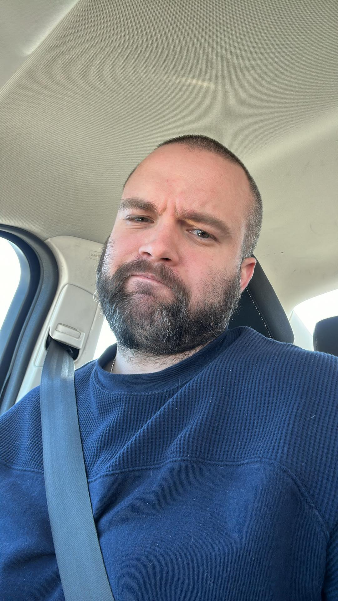

Ben Deihl

Summary
Dedicated and hard-working junior programmer striving to create and develop interesting and engaging
websites and experiences for clients. What I lack in knowledge I make up for in dedication to the craft
and getting things done with creativity and ingenuity.
Eduation
6 Years Active Duty US Army - Combat Photographer -2011-2017
Bachelor's Degree in Business Administrations - University of Maryland Global Campus - 2020-2023
Work Experience
Combat Photographer
- Capturing still images in war and peacetime environments
- Documentation of events, training, and combat
- Editing of still images and video, with familiarization in Adobe Photoshop and Premiere
- Working independently
Personal Trainer
- Creating individualized programs for clients
- Setting my own schedule and working with clients to meet theirs
- Setting client goals and working to achieve them in a manageable and proactive way
Dog Trainer
- Working collaboratively and independently with clients
Skills
- Creative thinking
- Photography
- Solo and collaborative efforts
- Managing clients and individual schedules
- Effective communication skills
Awards
Mutiple awards achieved within Military service inclduing:
- Army Achievement Medal
- Combat Action Badge
- Afghanistan Campaign Medal
- Army Commendation Medal
Other
Hobbies
Contact Me!